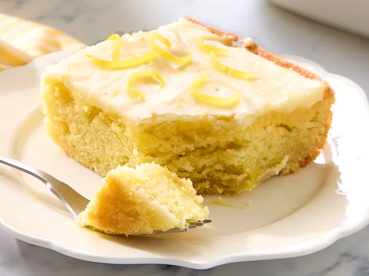

Home
Lemon Texas Sheet Cake

This Lemon Texas Sheet Cake is a light and fluffy dessert with a tangy lemon flavor. The cake is topped with a sweet lemon glaze that adds the perfect finishing touch. It's easy to make and perfect for any occasion.
Ingredients
Cake
- 1 cup butter
- 1 cup water
- 2 cups all-purpose flour
- 2 cups white sugar
- 2 large eggs
- 1/2 cup sour cream
- 1 teaspoon lemon extract
- 1 teaspoon lemon zest
- 1 teaspoon baking soda
- 1/2 teaspoon salt
Glaze
- 2 cups confectioners sugar, plus more as needed
- 2 tablespoons 1% milk
- 6 tablespoons salted butter
- 1/4 teaspoon kosher salt
- 1/2 teaspoon lemon extract
- 2 tablespoons lemon zest
Instructions
- Preheat the oven to 350 degrees F (175 degrees C). Grease a 9x13-inch baking dish.
- In a large bowl, cream the butter and sugar until light and fluffy.
- Beat in the eggs one at a time, then stir in the vanilla extract.
- In a separate bowl, whisk together the flour, baking powder, and salt.
- Alternately add the flour mixture and milk to the butter mixture, beginning and ending with the flour mixture.
- Stir in the lemon juice and lemon zest.
- Pour the batter into the prepared pan.
- Bake for 25 to 30 minutes, or until a toothpick inserted into the center comes out clean.
- Allow the cake to cool in the pan for 10 minutes before removing it.
- While the cake is cooling, prepare the glaze by whisking together the powdered sugar and milk until smooth.
- Drizzle the glaze over the cake and let it set before serving.